- Generated by
 1.11.0
1.11.0
|
Photon 2.0.0-beta
A physically based renderer.
|
A quick overview of the features supported by Photon. Similar to Project Structure, this page can also serve as a handy reference for locating the necessary documentation or source code.
Rendering is the process of visualizing a scene. In Photon, we utilize a Visualizer to generate a Renderer, which is responsible for creating a rendered image. This is where most of the core algorithms meet and work together, making it arguably the most complex part of the render engine. Photon offers a variety of renderers, each tailored to handle specific scenarios. There is no one-size-fits-all renderer for any types of scenes, as the effectiveness of a rendering algorithm depends heavily on the scene's characteristics, such as geometry dimensions and material properties. At the extreme end, one can always construct a scene that will fail a certain rendering algorithm. Therefore, it is crucial to understand and experiment with different renderers when faced with rendering challenges.
This is a relatively straightforward approach to solving the rendering equation as proposed by Kajiya [11], and is often a good starting point before diving into more complex solvers. Backward unidirectional path tracing, however, has its limitations. It does not handle scenes with small light sources or scenes where light transport paths are difficult to trace. This renderer can be constructed by creating a PathTracingVisualizer paired with BVPT energy estimator. If the rendering focuses solely on direct lighting, you may opt for the BVPTDL estimator instead.
With the addition of Next Event Estimation (NEE), unidirectional path tracing can become more adept at handling complex scenes. While this method largely builds on the same principle as the non-NEE variant, this renderer incorporates additional sampling techniques, as described by Veach [19], to improve the rendering of scenes with smaller light sources (as these scenes are often challenging for unidirectional path tracing). In a similar way, create a PathTracingVisualizer with BNEEPT energy estimator to leverage the benefits of NEE.
It is worth to clarify that the project is named Photon not because the focus is on photon mapping techniques, but because photon is the elementary particle that transmit light, and the primary aim of this project is to solve light transport problems. That said, Photon does offer several photon mapping techniques, with the most fundamental one being vanilla photon mapping as introduced by Jensen [10]. Photon mapping techniques are distinguished by their ability to merge nearby light transport paths, and this form of path reuse allows them to excel on a wider range of lighting phenomena. You can get a vanilla photon mapping renderer by creating a PhotonMappingVisualizer and set it to Vanilla mode.
This renderer implements the PPM algorithm by Hachisuka et al. [7] This method improves upon vanilla photon mapping by tracing a fixed set of view vertices as the first pass, then progressively refine the estimation of the incoming energy on those vertices. The rendered result will be closer to ground truth with more view vertices (and the above image is rendered with maximum view path length = 10).
One of the key advantages of progressive photon mapping methods is their ability to utilize an effectively infinite number of photons, which allows it to handle complex lighting scenarios more effectively than vanilla photon mapping. This capability leads to superior rendering results, especially for scenes dominated by specular-diffuse-specular paths. Create a PhotonMappingVisualizer in Progressive mode to use this renderer.
This renderer implements the SPPM algorithm by Hachisuka et al. [6], and is intended to serve as a reference implementation for more sophisticated techniques. The SPPM (and PPM) implementation in Photon tries to avoid tricks and shortcuts where possible, so the evaluated radiance is more likely to remain correct as the project evolves. As a result, this renderer is not optimized for speed and may not be suitable for scenarios where rendering time is a critical factor. Create a PhotonMappingVisualizer in Progressive mode to use this renderer.
This renderer is based on Knaus and Zwicker's paper [12], which innovatively decouples any intermediate radiance estimate pass from its previous iterations. By isolating each pass's calculations, we can treat any photon mapping technique as a black box and parallelizes the calculation of each pass trivially. However, this approach comes with a trade-off: increased memory consumption. Because each iteration is treated independently, more memory is required to store the intermediate results. This makes our implementation of PPPM more memory-intensive compared to other photon mapping techniques. Create a PhotonMappingVisualizer in Progressive mode to use this renderer.
Some Visualizers can make use of a WorkScheduler to distribute rendering work across multiple processor cores. Different types of schedulers dispatch their work in different ways. When rendering an image, a scheduler will typically use the dimensions of the image and number of iterations to define the total volume of work.
| Scheduler Type | Dispatch Pattern |
|---|---|
| Bulk: Layer by layer, each layer convers the whole image. | 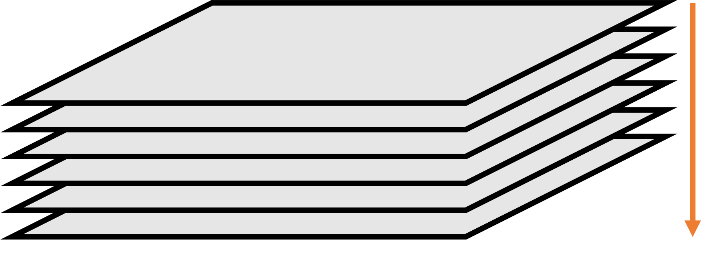 |
| Stripe: Divide image into stripes. | 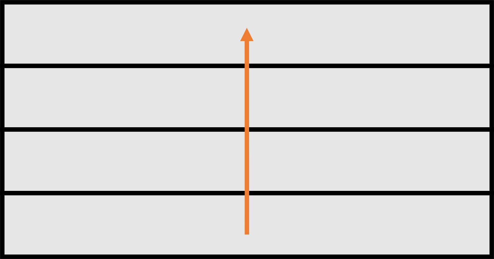 |
| Grid: Step through evenly divided image row by row. | 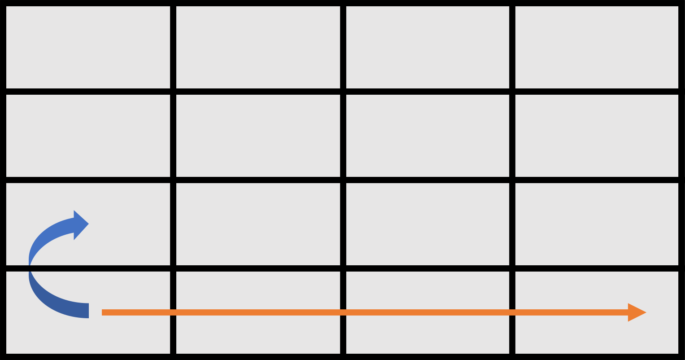 |
| Tile: Step through divided image row by row. | 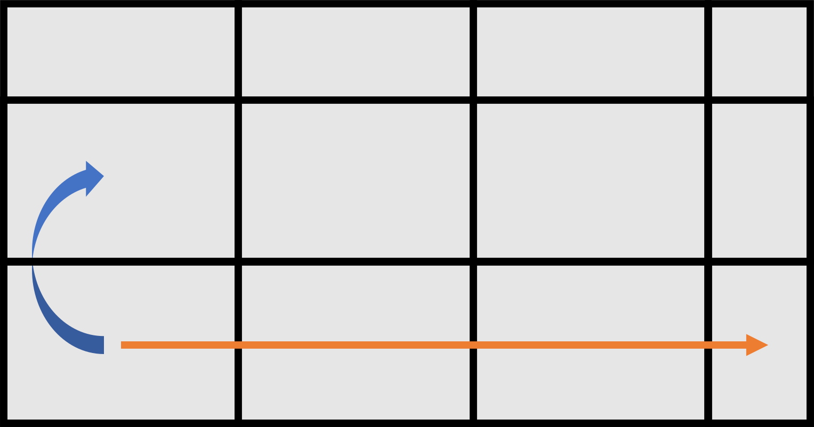 |
| Spiral: Step through the image cell by cell in a spiral shape. | 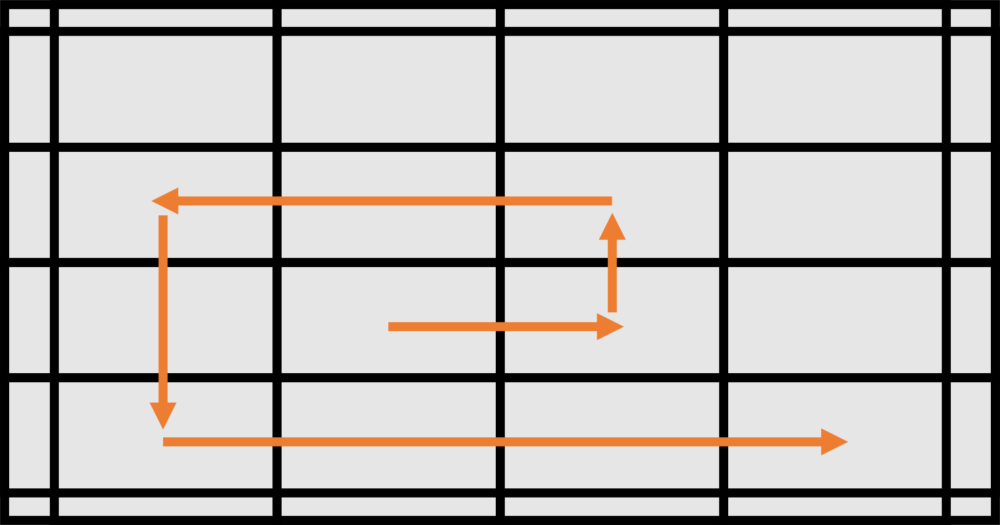 |
| SpiralGrid: Similar to spiral scheduler, except that each cell is subdivided into smaller cells. | 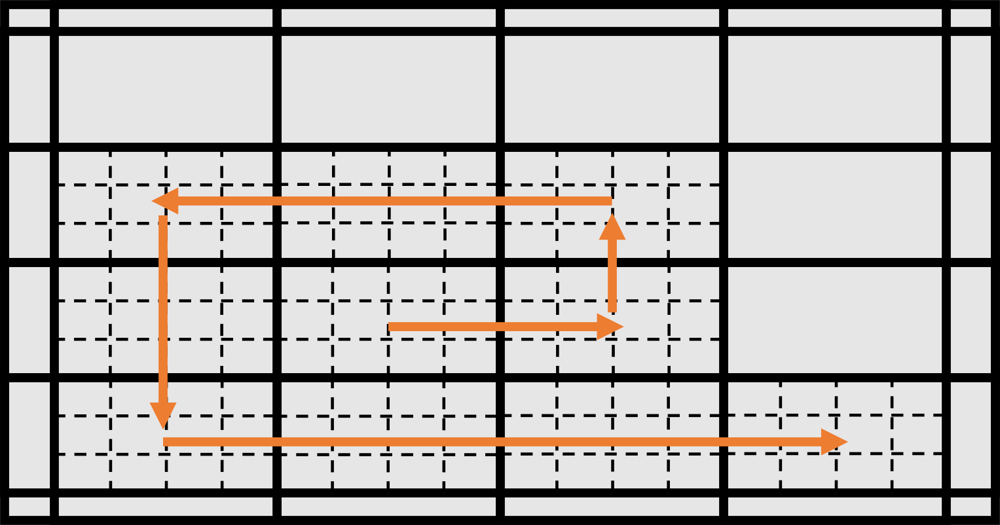 |
Observer plays an important role in capturing and recording a scene: it intercepts incoming energy and record it on its sensing device called Film–so you can observe the virtual world that has been rendered. Observers can generate energy Receivers. A common example of an energy receiver is camera, which senses and records lighting as a photograph.
Photon currently supports two types of perspective cameras: PinholeCamera and ThinLensCamera. A pinhole camera is simply composed of a small aperture (the "pinhole", which serves as its lens system) and a film. Images captured by this camera is similar to how a normal human perceives the world but with several simplifications. Due to its simplicity, it is widely adopted in computer graphics industry. This kind of camera can be generated by creating a SingleLensObserver with a zero lens radius.
For thin lens camera, as its name suggests, the lens system in this camera is assumed to be a single lens with negligible thickness. The biggest advantage of it is that depth of field effects are possible under this model (without introducing too many complexities). In the above render, depth of field is achieved by a 72 mm lens focusing on the first metallic monkey. This camera can be created similarly as pinhole camera by using a non-zero lens radius.
Image is a data storing medium that can bring finer details onto almost every aspects of the scene. Textures generated from an image can be categorized into numeric and color. Data sampled from a color texture will automatically adapt to the current spectral representation used by the renderer, while numeric textures will generally pass the data through without any changes.
One of the most frequently used image is constant. As suggested by its name, its value does not vary across the full image domain. A constant image takes an array of values as input and will not perform any transformation if color space information is not specified. The number of values in the input array also matters. For example, a single element will be interpreted as a constant spectrum when generating color textures, while three elements will be treated as a tristimulus color when spectral upsampling is performed. When conditions are met, the input array can also represent wavelength-value data points. Due to its versatility, its behavior is slightly complex, and the image implementation will try to detect and report potential issues to logs.
Photographs are probably the most common images that we encounter in real life. Most photographs nowadays are converted to a grid of pixel values before being displayed on a monitor. The raster image works similarly by reading pictures stored on disk into memory, converting them to pixel-based textures, and then mapping them to the scene to add details. We support many LDR and HDR formats through this image interface.
We present material implementations with a professional test scene standardized by André Mazzone and Chris Rydalch [14]. This scene is specifically designed to facilitate the observation and comparison of material appearances. There is an inset object within the main model that has a 18% albedo (this value is the current VFX industry standard), which serves as a neutral color comparator. For scene dimensions and other parameters, the Universal Scene Description Working Group has a nice entry for it, which is more up-to-date than the original paper.
Materials are represented by material data containers. These containers generate SurfaceOptics to describe SurfaceBehavior and VolumeOptics to describe VolumeBehavior. Surface and volume behavior objects are typically defined with respect to a Primitive. See the Geometry section for more details.
A classic material that is present in almost every renderer, whether offline or real-time, is the Lambertian-based diffuse BRDF, first described over 200 years ago by Lambert [13]. A generalization of Lambert's model is also implemented, which is often referred to as the Oren-Nayar reflectance model [15]. This model describes the surface as a collection of small Lambertian facets, each having a different orientation. We implement these material models as MatteOpqaue. Some examples are shown below:
| Left: Lambertian diffuse BRDF with 50% albedo. Right: Oren-Nayar diffuse BRDF with 50% albedo and 120° facet standard deviation. | |
We can simulate some materials that do not exist in the real world. One common example is the idealization of surface roughness, where a perfectly smooth interface is modeled. IdealSubstance makes the visualization of these kinds of materials possible, which is of great interest for both theoretical and practical applications.
| Left: Ideal absorber (absorbing 100% energy). Right: Ideal reflector (reflecting 100% energy). | |
Photon also supports tinting reflectance and transmittance with user-specified values. Note that this is not physically correct, and most of the color of dielectrics comes from internal volume absorption, not from interfaces. This feature is implemented for performance and artistic reasons only.
| 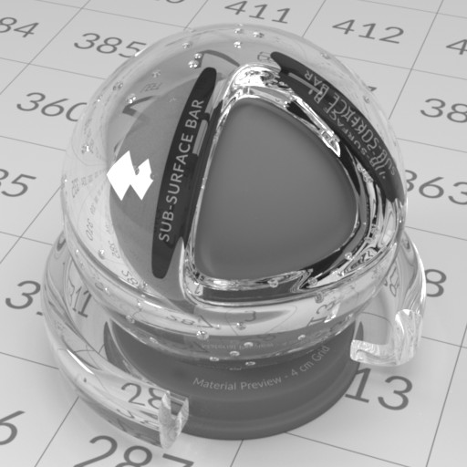 | 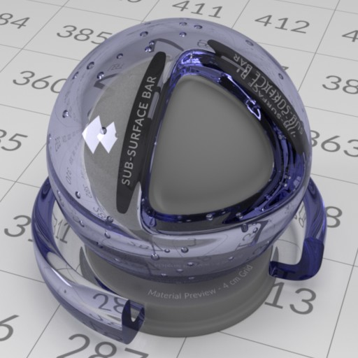 |
|---|---|
| Left: Ideal glass without any tint (index of refraction = 1.51714). Right: Ideal glass with blue reflection tint. | |
| 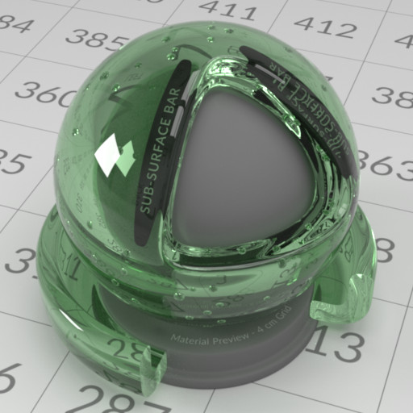 | 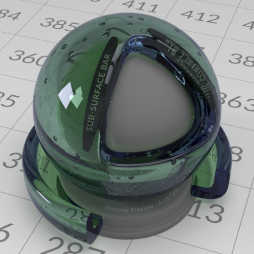 |
|---|---|
| Left: Ideal glass with green transmission tint. Right: Ideal glass with blue reflection and green transmission tint. | |
Real-world surfaces are seldom perfectly smooth. Therefore, AbradedOpaque offers a wide range of tweakable microsurface parameters for opaque materials. A popular BRDF model that allows this is the Cook-Torrance microfacet BRDF [3]. For the normal distribution function (NDF), we use the Trowbridge-Reitz model (also known as the GGX model) [18] by default, as it has been shown to match experimental data well. The model can use both exact and approximated versions of the Fresnel equation [5]. In the case of the exact Fresnel equation, measured spectral index of refraction (IoR) can be used (complex IoR is also supported). This site has a good collection of measured IoR data.
| 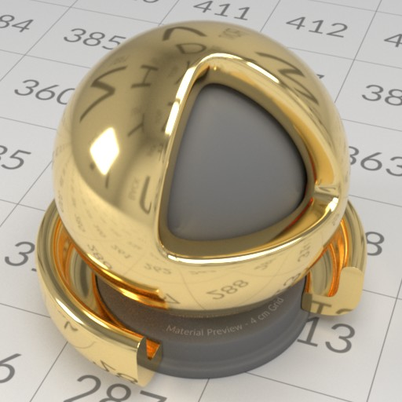 | |
|---|---|
| Left: Gold with roughness = 0.1. Right: Gold with roughness = 0.5. | |
NDFs other than Trowbridge-Reitz are also supported, see here. Roughness values are often remapped to the \( \alpha \) parameter in the NDF, we have implementations for some common mappings. The masking and shadowing terms in a microfacet BRDF often have some kind of correlation [8], and we provide some common forms to choose from.
The generalized form of Trowbridge-Reitz is anisotropic, which is described thoroughly in Disney's course note at SIGGRAPH 2012 [2]. For anisotropic NDFs, we have an implementation of the \( D_{GTR} \) variant with \( \gamma = 2 \). A sharp edge of anisotropic materials is that they require properly mapped UV coordinates across the mesh in order to form a local basis around the shading point, which is necessary for determining the value of the NDF. Below is some renderings of anisotropic microfacet materials:
| 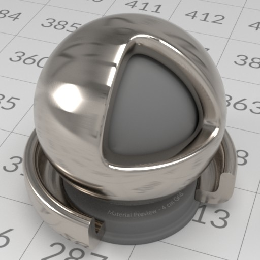 | |
|---|---|
| Brushed titanium. Left: Roughness = (0.05, 0.25). Right: Roughness = (0.25, 0.05). | |
Since the aforementioned microfacet theory is just a description of microgeometry, it can be applied to the case of light transmission with some modifications [20]. The most prominent change is that for each shading point, we now need to trace two paths instead of one, for reflection and transmission, respectively. Much of the code for handling reflection can be reused, but not for transmission (it requires an additional BTDF). This is one of the reasons why the abraded opaque and translucent materials do not share a common base class. As with its opaque variant, this material also supports VNDF-based sampling [4] in addition to ordinary NDF-based sampling. This microfacet-based translucent material is effective for modeling frosted glass. Currently, only single-bounce lighting inside the microgeometry is simulated. Multi-bounce lighting within the microgeometry will be incorporated in the near future.
| 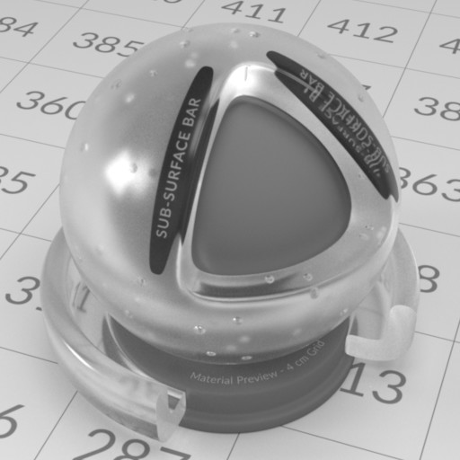 | 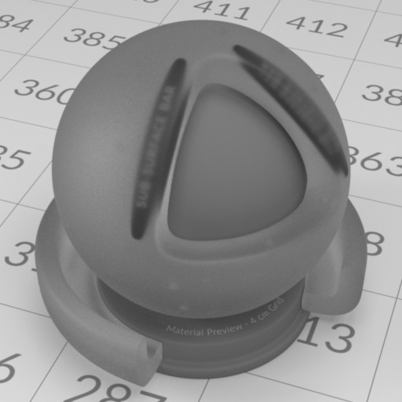 |
|---|---|
| Frosted glass. Left: Roughness = 0.2. Right: Roughness = 0.6. | |
Being able to mix two different materials greatly increases the diversity of possible materials. The mixing process can be nested, e.g., a mixed material can participate in another mixing process just like an ordinary, single material. Some material appearances, such as plastic and ceramic, can be achieved easily by this model (though it may not be accurate). As many other material attributes in Photon, the weighting factor for the mix can be mapped by an image.
| Left: Mixing matte opaque with abraded opaque materials with a (0.8, 0.2) weighting, producing a ceramic-like appearance. Right: Using an image to weight the same two materials. | |
Layered material models have become prevalent in the graphics community for quite some time. The solution by Jakob et al. [9] requires larger memory space to store some BSDFs, while the model developed by Weidlich et al. [21] requires little space but does not obey the law of energy conservation. Laurent Belcour developed a series of atomic statistical operators for simulating light transport within layers [1]. His solution is still not exact but is energy conserving, space efficient, and plays well with texture mapping. Photon has an implementation of Belcour's layered material model, which follows his original implementation closely, with some refactoring and improvements on numerical robustness.
| 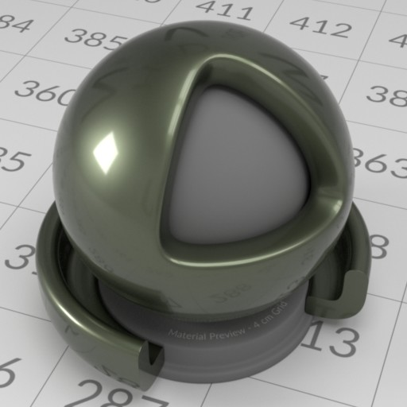 | |
|---|---|
| Left: Simulating a mug material. Right: Polished iron with 2 layers of coating. One of the coating layer simulates grease with volumetric light transport. | |
To represent a ball in the scene, you can use a sphere geometry; for a piece of paper on a table, a rectangle geometry can model it pretty well. Geometries are the core components of a scene, providing the structural framework for all other elements like materials, lights and physical motions. In the following sections, we will explore some common types of geometries available in Photon, giving you a rough idea of how these foundational elements are constructed and used in rendering.
When a Geometry is defined in the scene, it will be converted to an Intersectable before the actual rendering process begins. The renderer further treat some intersectable types as Primitive from which a richer set of functionalities are expected. In a similar way, some intersectable types are being classified as Intersector and they typically act as an aggregate of intersectables.
These are common shapes to have in a renderer and are frequently found in other render engines as well. They are useful not only for modeling objects but also for defining the shape of light sources (or anything that requires a shape). Tessellation is also supported on some types of geometries. We start by introducing the rectangular shape, which can be created by rectangle geometry.
We also have freestanding triangular shape which can be created by triangle geometry.
There is also spherical shape created by sphere geometry. The sphere generated is a true sphere by default (not a triangle mesh counterpart).
Using cuboid geometry, you can build a cube or box shape. Cuboids are axis-aligned bounding boxes (AABB) in their local space and allow for variable extents, making them more flexible than standard cubes.
A bonus to have cuboids is that voxel games like Minecraft can be rendered easily. Below is a work-in-progress render of a Minecraft level parser that tries to translate in-game data into PSDL:
Almost all shapes are built from triangle meshes for a typical scene. Games, modeling programs and other applications typically use triangle mesh to represent arbitrary 3-D shapes. It is basically a collection of triangles grouped in a way that approximates a target shape. It can be created by triangle mesh geometry or polygon mesh. The polygon mesh variant is a more memory efficient representation of a triangle mesh and supports customizable vertex layout and arbitrary index bit precision. Binary storage format is also supported (PLY format).
We also support some interesting shapes such as wave and fractals. These special geometries are sometimes useful for modeling a scene. One of them is the Menger sponge, a famous fractal shape. It can be created by Menger sponge geometry.
The wave shape is basically a cuboid with its top surface tessellated according to a superposition of 2-D sine and cosine functions. It can be created by wave geometry.
These advanced shapes add versatility to scene modeling in Photon.
Lighting is a crucial component in rendering a virtual world. Photon provides various types of light sources and emphasizes the use of physically based units for input parameters. This approach is supported by three primary reasons:
In Photon, lights are represented by a base actor type ALight. These light actors will be converted to a series of cooked data, including Primitive (the geometric shape of the light), SurfaceOptics (the surface material of the light), Emitter (the energy source of the light), etc. The following sections give a brief overview on the types of light sources implemented in Photon.
Photon currently supports rectangular and spherical area lights. An area light emits energy uniformly across its surface, producing a visually pleasing transition between umbra and penumbra. The amount of energy emitted is specified in Watt.
A spherical area light illuminating the same teapots:
In Photon, point light is implemented as a special spherical area light. This may suprise some, as we treat point lights as a subtype of area lights. The rationale is that traditional point light introduces an additional singularity in the rendering equation, and we already have quite a lot of singularities in the system, e.g., pinhole camera and mirror reflection/transmission. Moreover, traditional point lights are not physically possible anyway. Each singularity often requires special routines or conditions to handle properly, and managing them all as the renderer's complexity grows can be cumbersome. The idea is to give point lights a finite surface area, typically a sphere with a 1- to 3-cm diameter resembling the size of common light bulbs. Maxwell Renderer has adopted a similar design decision, although the reason behind it may differ. Below is a 300 W point light, emitting roughly the same brightness as the 300 W sphere light shown earlier:
Model light can be considered a superset of area light. A key difference between them is that while area light need to have a constant emission profile, model light lifted this limitation and allow using variable emission profiles (such as images) on arbitrary geometry.
An IES light profile stores the distribution of emitted energy of a light fixture. The majority of the datasets are provided by lighting manufacturers and are particularly useful for interior design and architecture visualization. Most commercial renderers can parse and render IES-based lights, and even some game engines support them. Photon does not treat IES light profiles as energy distribution functions, rather, they are interpreted as energy attenuating filters (effectively normalizing energy values to [0, 1], see IES attenuated light). This approach allows users to adjust total energy emitted by a light source freely, without being constrained by the absolute energy values stroed in the IES light profile. Still, it is always possible to extract the maximum energy density from an IES data file then applying the attenuation to faithfully reproduce the light fixture in the renderer.
A powerful method of lighting is image based techniques, also known as environment map or HDRI lighting. The main idea is to assume energy from far regions can be tabulated with direction vectors as entries. Lighting up a scene with HDRIs is usually the fastest and the most effective way to achieve natural-looking results. In photon, we call this type of light source a dome light. For a nice collection of HDR environment maps, visit https://hdrihaven.com/. Shown below is the same demo scene lit with an image dome source:
Another approach to lighting a scene is to physically model the energy coming from the sky. When it comes to sun-sky models, a classic example is the model by Preetham et al. [16] This model approximates the absolute value of radiant energy coming from the sky using a set of formulae. Given the latitude, longitude, date and time of the target location, we can analytically generate the sun and sky using Preetham dome.
Photon comes with a series of tools to facilitate scene rendering and management.
This is a tool for combining render output from multiple render sessions. A typical use case is the same scene being rendered by multiple machines, each producing a different render output. We call these render outputs "films". Multiple films can be merged into a single film in various ways. For example, statistically independent films can be merged into a more converged film with reduced noise and bias. Visit the tool's documentation page for more information.